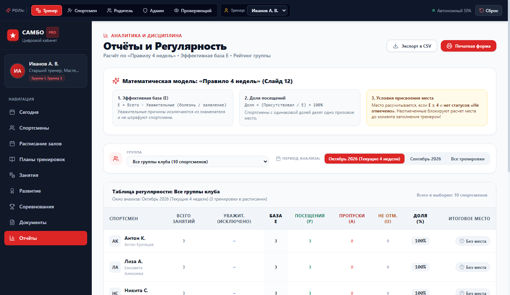
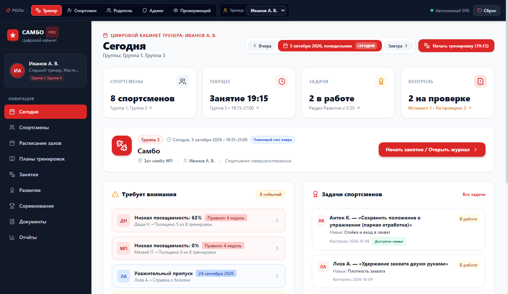
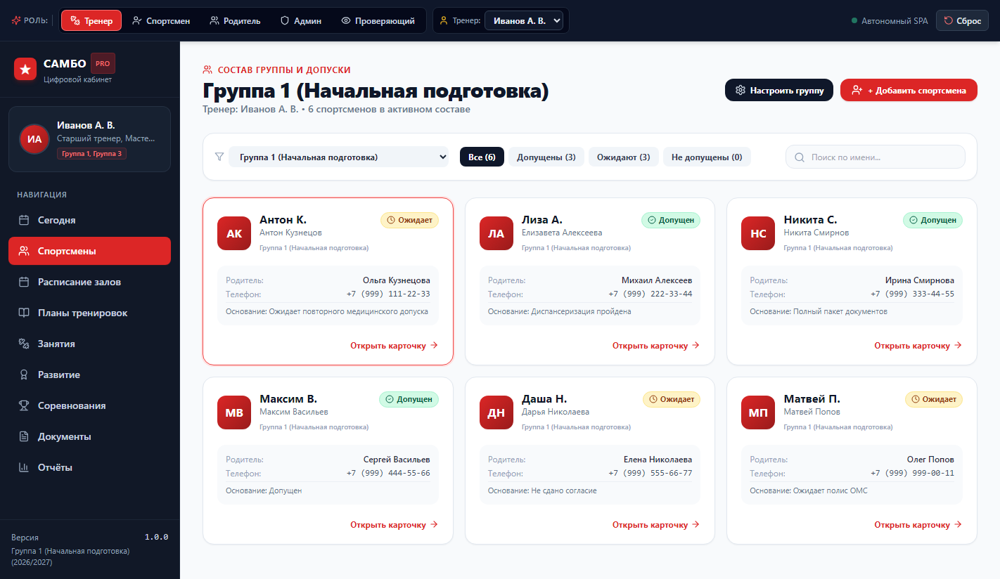
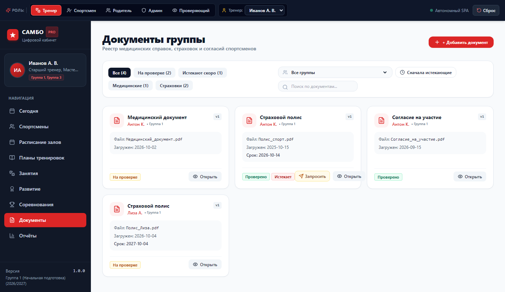
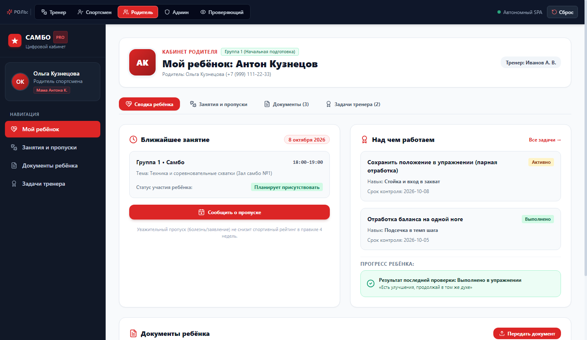
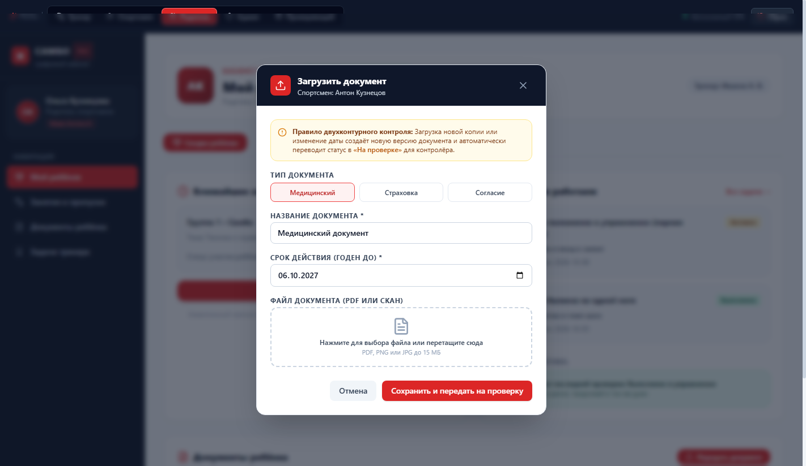
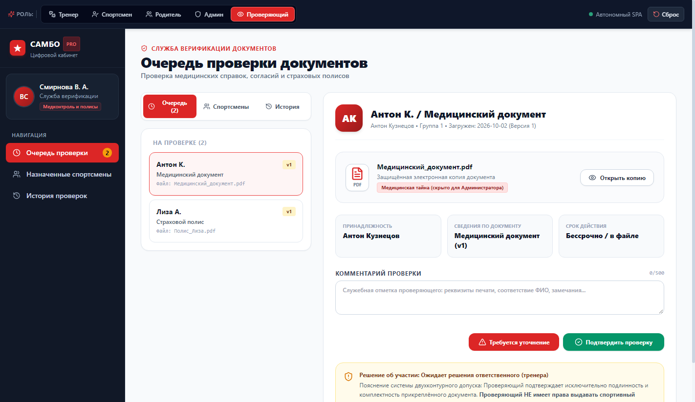

Подробная пошаговая инструкция с аутентичными скриншотами экранов программы. Руководство охватывает ведение отчетов по «Правилу 4 недель», ежедневную работу тренера, отправку запросов родителям и двухконтурную верификацию документов.
В самой верхней полосе экрана расположен сквозной переключатель ролей (DevHeader). Он позволяет мгновенно оценить, как выглядит система для каждого участника клуба:
Этот экран является ключевым аналитическим центром тренера и руководства. Расчет регулярности строится на научно обоснованной модели «Правило 4 недель», исключающей штрафы за уважительные пропуски по болезни.

E = Всего − Уважительные
Пропуски по болезни (справка) или по заявлению родителей полностью исключаются из знаменателя. Болеющий ребенок не теряет рейтинг!
Доля = (Посещения / E) × 100%
Спортсмены с одинаковой долей делят одно призовое место. Показывает реальную спортивную дисциплину без искажений.
Условие: E ≥ 4 и нет «Не отмечено»
Если тренер не заполнил статус хотя бы для одного занятия (статус U), расчет призового места блокируется до момента отметки.
При входе в программу тренер сразу видит оперативную картину текущего дня: сколько борцов в группе, во сколько начинается тренировка, сколько документов ожидают проверки и какие спортсмены требуют внимания.

В разделе «Спортсмены» отображается полный список группы с фильтрацией по медицинскому допуску: «Допущены», «Ожидают», «Не допущены».


1. В списке спортсменов кликните «Открыть карточку →» у борца со статусом «Ожидает» (например, Антон К.).
2. Перейдите на вкладку «Документы».
3. Нажмите кнопку «Запросить у родителя» напротив нужного документа или в блоке действий справа.
✓ Запрос мгновенно отправлен! У родителя на телефоне появляется уведомление.
Как только тренер нажимает кнопку запроса, родитель видит крупный янтарный баннер с указанием, какой именно документ требуется и почему это важно для допуска.


1. Нажмите красную кнопку «Загрузить обновлённый документ» в баннере.
2. Тип документа (Медицинский или Страховка) уже выбран автоматически.
3. Выберите новую дату окончания действия документа.
4. Нажмите на область файла и выберите фото с камеры смартфона или PDF-файл.
5. Нажмите «Сохранить и передать на проверку». Запрос тренера будет автоматически закрыт!
Служба верификации (спортивный врач или секретарь школы) получает загруженные родителями копии в защищенный контур модерации. Администратор клуба не видит медицинскую тайну — доступ открыт только аттестованному проверяющему.

1. Выберите документ из списка слева (версия v1, v2 и т.д.).
2. Нажмите «Открыть копию» и проверьте печать, подпись и срок.
3. Нажмите «Подтвердить проверку» (зеленая кнопка) — статус спортсмена у тренера мгновенно становится зеленым («Допущен»).
4. Если есть дефекты (смазан скан, нет даты) — введите комментарий в поле и нажмите «Требуется уточнение» (красная кнопка). Родитель сразу увидит замечание в своем кабинете.